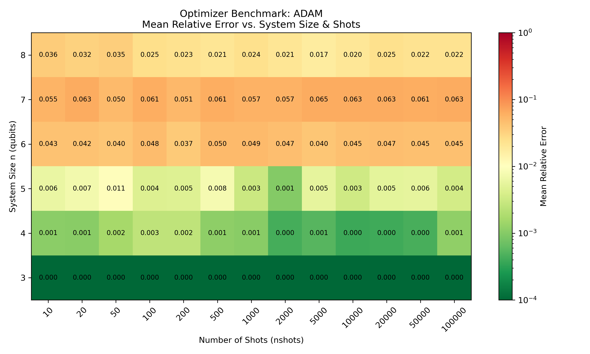
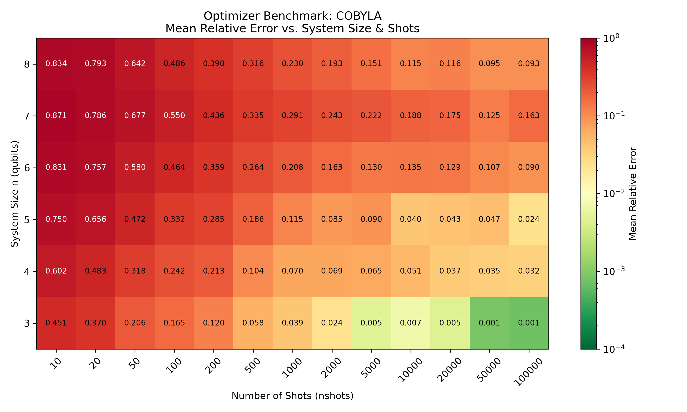
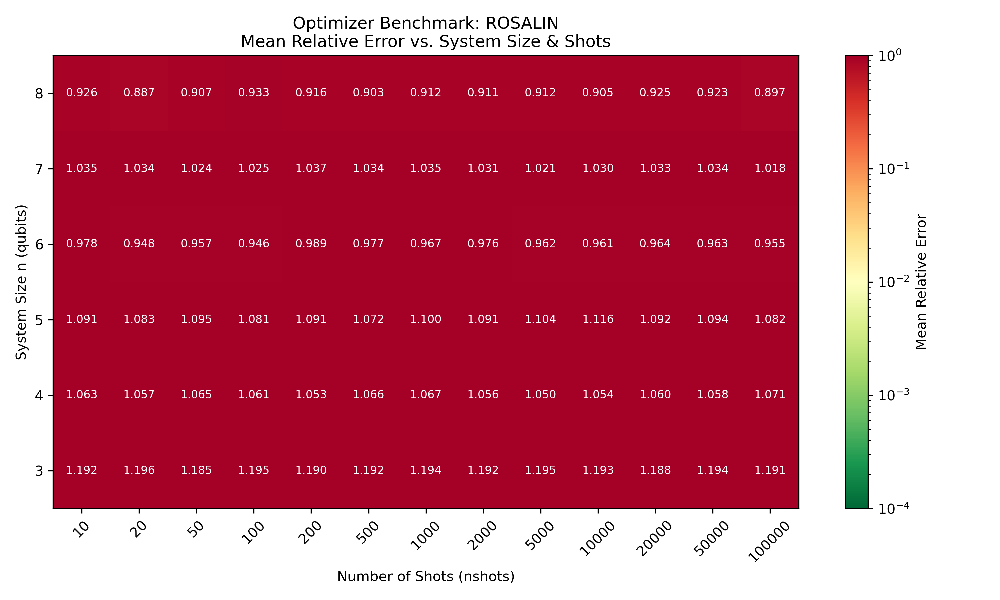
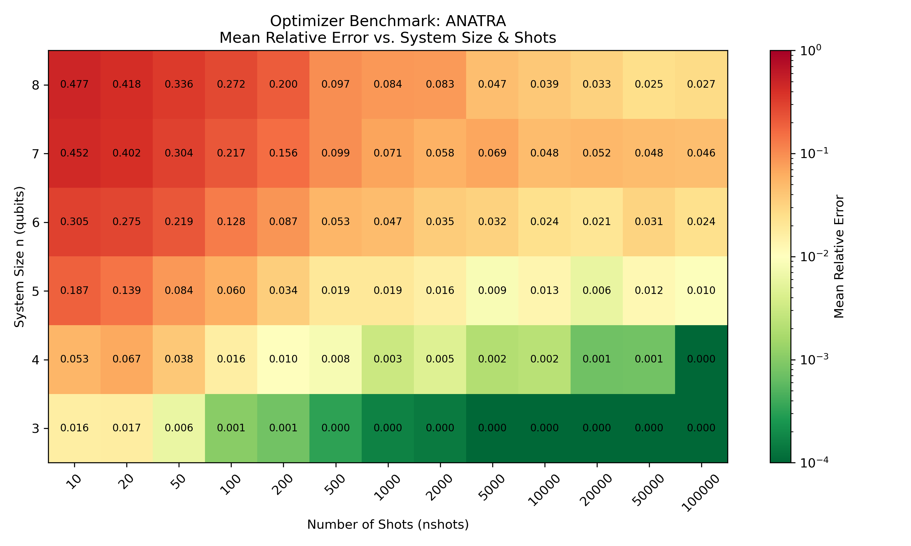

Variational Quantum Algorithms (VQAs) (Cerezo et al. 2021) are designed to extract utility from Noisy Intermediate-Scale Quantum (NISQ) hardware (Preskill 2018). In these hybrid quantum-classical algorithms, a quantum device evaluates expectation values of a parametrized circuit, while a classical optimizer updates circuit parameters iteratively.
Because quantum evaluation relies on finite measurement counts (shots), expectation value estimates are subject to shot noise. As demonstrated by Bärligea et al. (Bärligea et al. 2025), optimizing under high stochastic noise presents significant scalability challenges, necessitating robust classical optimization strategies.
In this tutorial, we review the mathematical foundations of several noise-resilient optimizers, detail an experimental benchmarking framework using Tequila (Kottmann et al. 2021), and analyze how these optimizers perform under noisy conditions by testing various system sizes and shot numbers and measuring their relative error.
2. Mathematical Foundations
2.1 Harmonic Oscillator Based Particle Swarm Optimization (HOPSO)
Harmonic Oscillator-based PSO (HOPSO) replaces the algebraic velocity update of conventional PSO with the physics of a damped harmonic oscillator (Chernyak et al. 2025). The core idea is that every particle is attached to a virtual spring anchored at an attractor \(a_{j,d}\), which is a weighted average of the particle’s personal best and the global best.
Each particle’s position in dimension \(d\) follows the underdamped harmonic oscillator equation: \[ x(t) = A_0\, e^{-\lambda t}\cos(\omega t + \theta) + a_{j,d} \]
To prevent particles from freezing entirely when their personal and global bests converge prematurely, HOPSO enforces a threshold amplitude\(A_{\mathrm{th}}\)(Mohammad et al. 2025): \[ A_{\mathrm{th},j,d} = \frac{|p_{j,d} - g_d|}{2} \cdot m \]
Circular Attractor Computation: Quantum parameters are angles periodic with \(2\pi\). A naive average between \(10^\circ\) and \(350^\circ\) gives \(180^\circ\), placing the attractor on the wrong side of the circle. HOPSO detects the shortest path on the circle and corrects the calculation by adding or subtracting \(2\pi\) to maintain the correct periodic topology.
To optimize Variational Quantum Algorithms efficiently on noisy hardware, classical optimizers must balance measurement accuracy against total quantum resource consumption. Rather than using a fixed, large number of shots for every evaluation, adaptive optimizers dynamically adjust shot counts based on local noise levels.
iCANS (individual Coupled Adaptive Number of Shots)
Inspired by classical adaptive sampling methods, iCANS dynamically adjusts the number of measurement shots for each gradient component individually. In regions where a parameter’s gradient is strong and steep, fewer shots are needed. In flat regions or near local minima where noise dominates, iCANS increases the shot allocation for that specific coordinate.
gCANS (global Coupled Adaptive Number of Shots)
gCANS shares the same adaptive principle as iCANS, but instead of adjusting shot counts coordinate-by-coordinate, it evaluates the variance of the entire gradient vector globally. It allocates a uniform, optimal shot count across all parameters for each optimization step.
Rosalin (Random Operator Sampling for Adaptive Learning with Individual Number of Shots)
In VQE, evaluating the energy requires measuring a Hamiltonian composed of a sum of many individual Pauli operators (\(H = \sum_i c_i P_i\)). Evaluating all operators at every step becomes computationally expensive. Rosalin combines the individual shot adaptation of iCANS with random operator sampling. Meaning that instead of measuring every Pauli term in every step, it randomly samples terms according to their weights, providing an unbiased energy estimate while conserving quantum shots.
The Adaptive Noisy Model-Based Trust-Region Algorithm (ANATRA) (Larson et al. 2025) is a derivative-free optimizer designed for noisy objective functions. Instead of estimating gradients directly, ANATRA constructs a local quadratic surrogate model from energy values evaluated at sample points around the current parameter iterate \(\theta_k\).
Optimization steps are calculated by minimizing this surrogate model within a local Trust Region (a spherical neighborhood of radius \(\Delta_k\)).
ANATRA achieves noise resilience through two key mechanisms:
Surrogate Smoothing: Fitting a quadratic interpolation model over multiple points averages out stochastic shot noise across the local sample set.
Adaptive Sampling Radius: Standard trust-region methods shrink \(\Delta_k\) upon unsuccessful steps. Under shot noise, shrinking the radius too far causes sample points to collapse together, making energy differences indistinguishable from evaluation noise. ANATRA decouples the sampling radius from the trust region, enforcing a minimum sampling distance proportional to the square root of the noise level, to ensure sample points remain sufficiently separated to capture true objective gradients above the noise floor.
Code
# ANATRA Noise-Aware Sampling Radius & Geometry Check # 1. Compute Lipschitz constant & noise-aware minimum sampling radiusif valid_geometry: L_new = np.max(np.linalg.eigvals(H_hessian)) L = np.maximum(L_new, 1.0)min_sample_delta = np.sqrt(2.0* r * epsilon / L)# 2. Decouple sampling radius (delta_bar) from trust-region step radius (delta_k)delta_bar =max(delta_k, min_sample_delta)# 3. Test if function variation across sample set is dominated by evaluation noisenoise_dominated = np.all(np.abs(hF[Mind] - hF[xk_center]) < epsilon)if noise_dominated:# Trigger geometry improvement subroutine (Improving poisedness of X) Mdir, mp, valid, Cres, Gres, Hres, Mind = formquad_lagrange( X[0:nf +1, :], Res[0:nf +1, :], delta_bar, xk_center, np_max, Par, 0, Mind )
2.3 Standard Baseline Optimizers
To benchmark specialized noise-resilient algorithms, we also evaluate widely used classical optimizers. ADAM and SGD are integrated into the tequila library, whereas preimplementations of COBYLA and POWELL are imported from the SciPy library.
ADAM & SGD (Gradient-Based):
SGD updates parameters along the direction of the estimated gradient.
ADAM (Adaptive Moment Estimation) incorporates exponential moving averages of past gradients (momentum) and squared gradients (adaptive learning rates) to stabilize parameter updates under stochastic noise.
COBYLA & POWELL (Gradient-Free Direct Search):
COBYLA constructs local linear approximations over a simplex trust region without requiring derivative evaluations.
POWELL performs sequential line searches along conjugate directions using function values alone.
3. Experimental Setup
To systematically benchmark these optimizers under simulated NISQ conditions, we conducted large-scale computational experiments. The key experimental parameters were:
System Size (\(N\)): Scaled from 3 to 8 qubits to evaluate performance in increasing search space dimensions.
Shot Noise: Evaluated shot counts ranging from \(10\) to \(100,000\) shots per function evaluation.
Hamiltonian: Random instances of the Sherrington-Kirkpatrick (SK) spin glass model.
Ansatz: Hardware-Efficient Ansatz (HEA) utilizing \(R_y\) and \(R_z\) rotations with CNOT entanglement layers.
Statistics: To ensure statistical reliability, each parameter pair (\(N\) qubits, \(S\) shots) was evaluated across 100 independent runs (10 problem instances \(\times\) 10 initialization seeds).
Below is a compact excerpt of the execution wrapper demonstrating trial initialization and parallel dispatch:
def worker_task(args_tuple):""" Executes a single optimization run """ n, nshots, p_idx, r_idx, optimizer, ansatz, n_layers = args_tuple# 1. Establish deterministic seeds seed_problem = p_idx seed_run =1000* p_idx + r_idx# 2. Build the random SK Model and Tequila Ansatz prob = IsingProblem.create_random_instance(n=n, which="SK", seed=seed_problem) ref_min = prob.get_min_cost_value() # Calculate the exact analytical minimum O, vars_ = build_ising_random(n=n, seed=seed_problem, n_layers=n_layers, ansatz=ansatz)# 3. Initialize parameters normally around 0 rng = np.random.default_rng(seed_run) init = {v: float(rng.normal(0.0, 0.1)) for v in vars_}# 4. Dispatch to the corresponding Optimizerif optimizer.lower() =="hopso": kwargs = {"population_size": 10, "maxiter": 30, "seed": seed_run, "samples": nshots, "c1": 1.0, "c2": 2.0} res = run_hopso(O, vars_, init, **kwargs)elif optimizer.lower() in ["icans", "rosalin", "anatra"]: res = run_custom_optimizer(O, optimizer, vars_, init, extra_kwargs={"s_min": 10, "samples": nshots})return {"found_min": res["energy"],"ref_min": ref_min,"nfev": res.get("fes", 0) }
4. Results and Analysis
After aggregating the benchmark runs, we evaluate optimization performance using the Mean Relative Error between the found energy and the exact ground state energy:
We visualize these errors in heatmaps, where the Y-axis represents system size \(N\) (\(3\) to \(8\) qubits), the X-axis represents the shot budget per evaluation (\(10\) to \(100,000\) shots), and the color scale reflects optimization accuracy (green/yellow for low relative error, red for optimization failure).
We categorize the evaluated optimizers by their empirical scaling behaviors and noise resilience.
4.1 Gradient-Based Optimizers (ADAM, SGD)
Standard gradient methods (ADAM and SGD) demonstrated strong noise resilience across all tested configurations.
ADAM exhibited particularly robust low-shot performance, achieving relative errors near \(0.000\) at \(N=3\) qubits even under heavy shot noise (\(10\) shots). As the system size scales up to \(N=8\) qubits, ADAM maintains mean relative errors between \(0.022\) and \(0.036\) across all shot budgets.
Overall, gradient-based methods display low sensitivity to shot noise, maintaining consistent parameter progress regardless of whether \(10\) or \(100,000\) shots are allocated per function evaluation.

4.2 Gradient-Free Direct Search (COBYLA, POWELL)
Direct search methods, like COBYLA and POWELL, show a clear trade-off on the heatmaps. We see that as the system size grows, significantly more shots are needed to reach low error.
At smaller system sizes (\(N=3\)), high shot counts (\(1,000\) shots or higher) enable COBYLA to converge near zero error. However, as the dimensionality increases to \(N=8\) qubits, performance degrades significantly, with mean relative errors plateauing around \(0.10\) even at \(100,000\) shots. This reflects the high measurement precision required by direct search algorithms when navigating higher-dimensional parameter spaces.

4.3 Variance-Adaptive and Swarm-Based Approaches (ROSALIN, HOPSO)
The variance-adaptive shot method (ROSALIN) failed to achieve effective convergence under simulated shot noise, exhibiting relative errors near \(1.0\) across all tested settings. Local variance-based shot adjustments proved inadequate when energy evaluation noise dominated the parameter space.

Similarly, harmonic oscillator based particle swarm optimization (HOPSO) exhibited elevated mean relative errors ranging from \(0.38\) to \(0.71\). Notably, increasing the shot budget from \(10\) to \(100,000\) shots yielded no significant performance gain, indicating that measurement precision alone does not resolve HOPSO’s convergence plateau on this objective landscape.
The model-based trust-region algorithm (ANATRA) demonstrated noise resilience comparable to standard gradient methods at higher shot counts. At \(N=8\) qubits, ANATRA systematically reduced mean relative error from \(0.477\) at \(10\) shots down to \(0.027\) at \(100,000\) shots.

As a conclusion, these empirical results show that model-based and gradient-based methods scale most reliably under shot noise, while variance-adaptive and swarm-based approaches had their limitations in the setting of our experiment.
References
Bärligea, Adelina, Benedikt Poggel, and Jeanette Miriam Lorenz. 2025. “Scalability Challenges in Variational Quantum Optimization Under Stochastic Noise.”Physical Review A 112 (3): 032407. https://doi.org/10.1103/rgyh-8xw8.
Cerezo, M., Andrew Arrasmith, Ryan Babbush, et al. 2021. “Variational Quantum Algorithms.”Nature Reviews Physics 3 (9): 625–44. https://doi.org/10.1038/s42254-021-00348-9.
Chernyak, Yury, Ijaz Ahamed Mohammad, Nikolas Masnicak, Matej Pivoluska, and Martin Plesch. 2025. “Harmonic Oscillator Based Particle Swarm Optimization.”PLOS One 20 (6): e0326173. https://doi.org/10.1371/journal.pone.0326173.
Kottmann, Jakob S., Sumner Alperin-Lea, Teresa Tamayo-Mendoza, et al. 2021. “Tequila: A Platform for Rapid Development of Quantum Algorithms.”Quantum Science and Technology 6 (2): 024009. https://doi.org/10.1088/2058-9565/abe567.
Larson, Jeffrey, Matt Menickelly, and Jiahao Shi. 2025. “A Novel Noise-Aware Classical Optimizer for Variational Quantum Algorithms.”INFORMS Journal on Computing 37 (1): 63–85. https://doi.org/10.1287/ijoc.2024.0578.